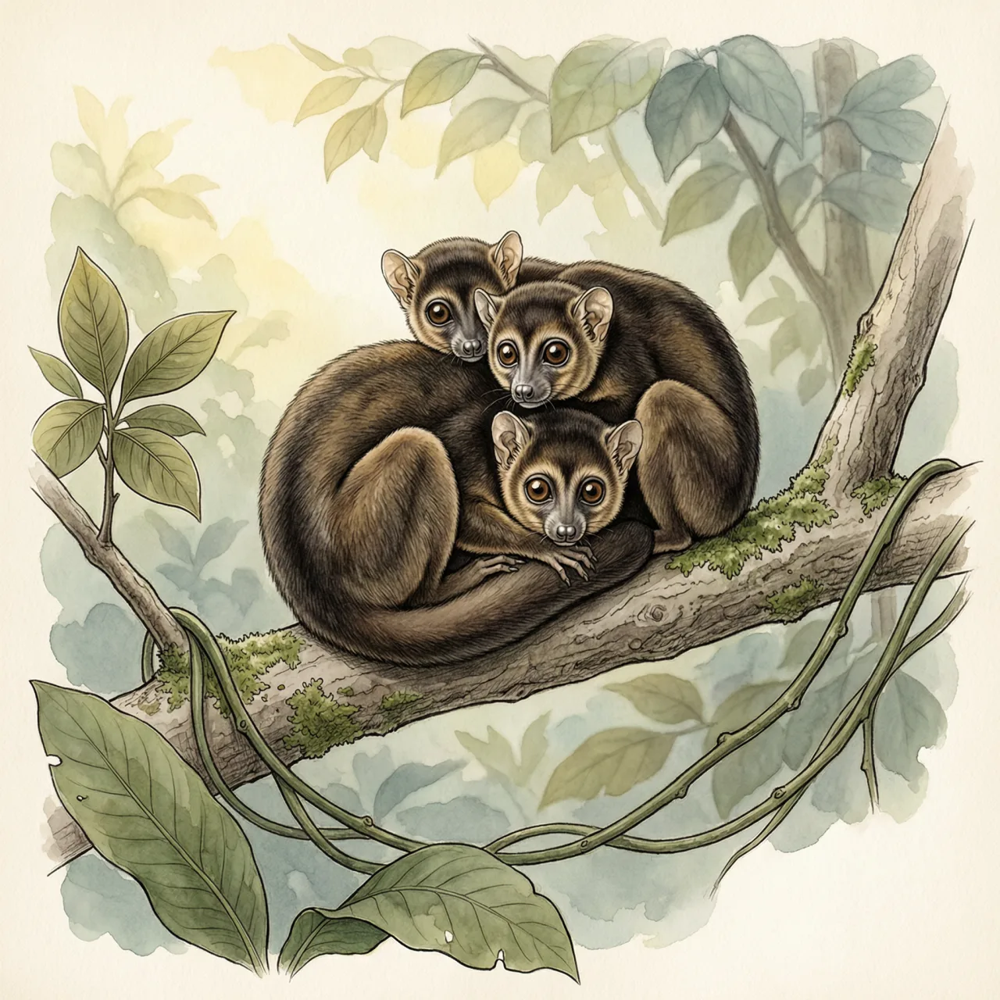
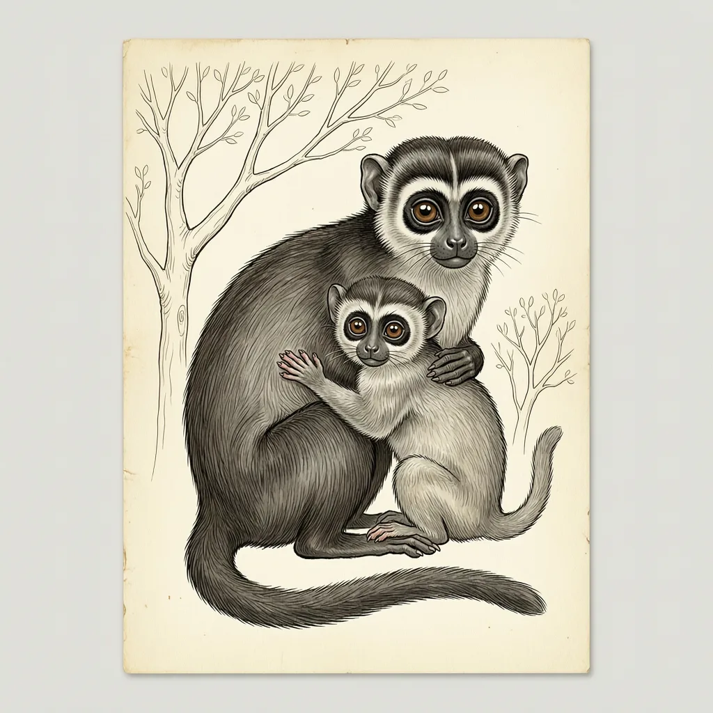

阿氏夜猴是一种南美洲的夜行猴，分布于阿根廷、玻利维亚、巴拉圭及秘鲁，夜里活动于雨林与开阔地带。它们单配偶生活，雄性同样参与育幼，子代约两至三年后离亲组建家庭。与其他夜猴不同的是，有些族群白天同样活跃，还偏爱在月光更明亮的夜晚活动。
白天，2至5只阿氏夜猴挤在同一棵树上睡觉，平均3只，正好是猴爸爸、猴妈妈和一只子嗣。天一黑它们就散开，在树与树之间跳跃，也会四足步行。阿氏夜猴分布于北阿根廷、玻利维亚、巴西中部、巴拉圭和秘鲁东南部，栖息地从南亚马逊雨林延伸到更开阔的地区，记录最北到安第斯山脉山麓，种下分3个亚种。阿氏夜猴在当地常见，但因栖息地丧失，部分地区数量在下降。
在许多灵长类家庭里父亲是缺席的，阿氏夜猴却是单配偶制，雄性像雌性一样提供亲代抚育，背负幼崽的活儿大头落在雄性身上。两性没有明显差异，不仔细看，分不清守在幼崽旁边的是父亲还是母亲。妊娠期约133天，子代在父母身边待约两至三年，之后离开、去组建自己的家庭。夜猴属人工饲养的个体可以活到20年，野外的实际寿命则没人知道。
夜行让阿氏夜猴避开了与昼行性动物的竞争，但这条规矩执行得不彻底。和其他夜猴不同，住在更开阔地区的阿氏夜猴白天与夜晚同样活跃。阿氏夜猴眼睛极大，视网膜以视杆细胞为主，像是为黑暗造的；可它们并不拒绝光，反而偏爱月光更明亮的夜晚。
